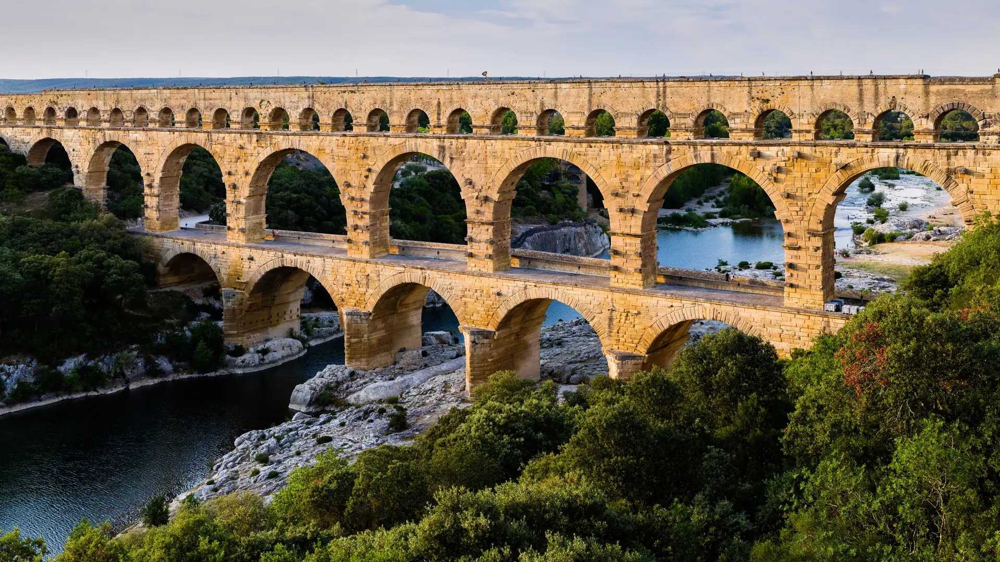

{kind=link}
관광·미술관
Nous avons déjà des billets.
이미 표가 있습니다.
누 자봉 데자 데 비예

기원전 1세기 말~기원 1세기 중반(아우구스투스 황제~클라우디우스 황제 치세)에 건설된 현존하는 고대 로마 수도교 중 가장 높고(48.8m) 완벽하게 보존된 유네스코 세계유산이다.
단순한 강을 건너는 교량이 아니라, 우제스(Uzès) 인근 외르(Fontaine d'Eure) 수원지에서 로마 도시 네마우수스(Nemausus, 현 님)의 분수, 공중목욕탕, 귀족 저택에 매일 40,000㎥(약 4천만 리터)의 청정수를 공급하던 총연장 50km 로마 수도 시스템의 가장 험준한 계곡 통과 구간이다.
가르동(Gardon) 강의 깊은 협곡을 건너기 위해 3단으로 쌓아 올린 웅장한 아치 비례와, 모르타르(회반죽) 없이 6톤에 달하는 거대한 석회암 블록을 정밀하게 맞물려 세운 고대 토목공학의 정점을 보여준다.
"단순히 거대한 석조 다리를 감상하는 데 그치지 않고, 50km를 1km당 34cm라는 기적의 완만한 경사로 물을 흐르게 한 로마인들의 초정밀 수력 공학을 이해할 때 진정한 경이로움이 시작된다." 좌안(Rive Gauche) 방문자 센터와 박물관을 둘러본 후, 강변 산책로를 따라 다리 아래를 지나 우안(Rive Droite) 언덕 전망대에서 가르동 강과 3층 아치가 어우러진 파노라마를 감상하는 90~120분 여정이 필수적이다.
| 운영시간 | 9월 09:00–19:00 (매표 18:30 마감) |
|---|---|
| 휴무 | 부지·주차장 연중무휴(08:00~24:00). 단 문화시설은 11~2월 휴관, 그 외 기간에도 매주 월요일 오전 정비 휴무 |
| 요금 | 부지·다리 무료 · 주차 €9/차량 · 실내 전시 €8 |
| 예약 | 일반 입장 예약 불필요. 주차·교육공간·가이드투어·워크숍만 유료 |
| 메모 | 야간 조명 5/15–9/20 운영 (쇼 Les Féeries 는 7/4–8/30 종료) |
| 층 | 아치 수 | 길이 | 통로 기능 |
|---|---|---|---|
| 1층 (하단) | 6개 | 142m | 하천 수압을 견디는 거대 교각 (18세기 앙리 피토가 보행교 증축) |
| 2층 (중단) | 11개 | 242m | 협곡 중상부를 잇는 구조적 지지 아치 |
| 3층 (상단) | 35개 | 273m | 실제 물이 흐르던 밀폐 석조 수로관(Specus) |
로마 제국 몰락 후 대부분의 로마 수도교는 석재를 약탈당해 파괴되었으나, 퐁 뒤 가르는 가르동 강을 건너는 유료 도로 교량(Péage)으로 계속 사용되어 우제스 공작과 인근 영주들이 자발적으로 보수·관리했기 때문에 2천 년을 온전히 버텨냈다. 1747년 토목기사 앙리 피토(Henri Pitot)가 1층 아치에 도로교를 덧붙여 마차 통행을 용이하게 했다.
| 항목 | 상세 정보 |
|---|---|
| 위치 | 400 Route du Pont du Gard, 30210 Vers-Pont-du-Gard |
| 운영 시간 | 야외 유적지 연중무휴 상시 개방 (09:00–20:00, 하절기 22:00까지) / 박물관 09:00–18:30 |
| 입장/주차 요금 | 차량 1대당 €9.00 정액 주차 요금 (차량 내 탑승자 전원 야외 유적지 입장 무료) / 실내 박물관·시네마 관람 시 성인 1인당 €6.50 추가 |
| 보행 동선 | 1층 피토 도로교(Pont Pitot) 자유 보행 횡단 및 좌·우안 전망대 외관 조망이 기본 동선 |
| 3층 고대 수로(3e niveau) | 3층 최상단 수로관(Canal antique) 내부는 안전 및 유적 보존을 위해 공식 가이드 투어(Visite guidée) 전용으로만 접근 가능(비방학 평상시 주로 수/토/일 운영). 해당 날짜 특별 슬롯 예약 시에만 선택적(Optional) 진행 |
| 주차장 선택 (중요) | Rive Gauche (좌안) 주차장 권장: 박물관, 방문자 센터, 카페, 기념품점이 집중되어 있어 관람 시작점으로 최적 |
| 복장/준비물 | 그늘이 적은 야외 유적지이므로 모자, 선글라스, 생수 필수, 강변 자갈밭 보행을 위한 편안한 신발 |
| 연계 동선 | Uzès에서 D981 도로로 약 20분, Avignon에서 차로 약 35분, Nîmes에서 차로 약 30분 소요 |
Nous avons déjà des billets.
이미 표가 있습니다.
누 자봉 데자 데 비예
On peut prendre des photos ?
사진 찍어도 되나요?
옹 푀 프랑드르 데 포토
Où commence la visite ?
관람은 어디서 시작하나요?
우 코망스 라 비지트

높이 15m 거대한 지하 백색 석회암 채석장 동굴 전체를 디지털 캔버스로 변모시킨 세계 최초·최대 규모의 몰입형 미디어 아트 공간. 7,000㎡ 암벽과 바닥을 감싸는 빛과 음악의 향연.

기원전 6세기 켈트 성소에서 헬레니즘 도시를 거쳐 로마 제국의 온천 휴양도시로 번영했던 거대한 고대 발굴 유적지. 갈리아에서 가장 완벽하게 보존된 기원전 1세기 로마 영묘와 개선문 '레 장티크(Les Antiques)'.

알피유(Alpilles) 산맥 해발 245m 석회암 절벽 위에 우뚝 솟은 중세 독수리 요새 마을. 자연 암반과 성벽이 하나로 결합된 레보 성채(Château des Baux) 폐허와 올리브 계곡 대파노라마.

세계적인 식물학자 파트리크 블랑의 300㎡ 거대한 수직 정원(Mur Végétal) 외벽 아래 40여 개 프로방스 전통 식재료 좌판이 모인 아비뇽의 활기찬 실내 중앙 미식 시장.

14세기 가톨릭 교황청이 로마를 떠나 68년간 머물렀던 서유럽 최대의 중세 고딕 요새 궁전. 베네딕토 12세의 구궁전과 클레멘스 6세의 신궁전, 마테오 조바네티의 프레스코화와 히스토패드 3D 증강현실 복원.

12세기 론(Rhône) 강을 건너 교황령 아비뇽과 프랑스 왕국을 잇던 920m의 유일한 석조 다리. 소빙하기의 거센 홍수로 22개 아치 중 4개와 2층 생니콜라 예배당만 남은 유네스코 세계유산.